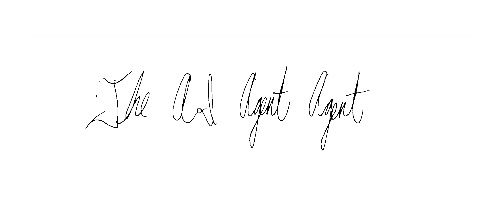
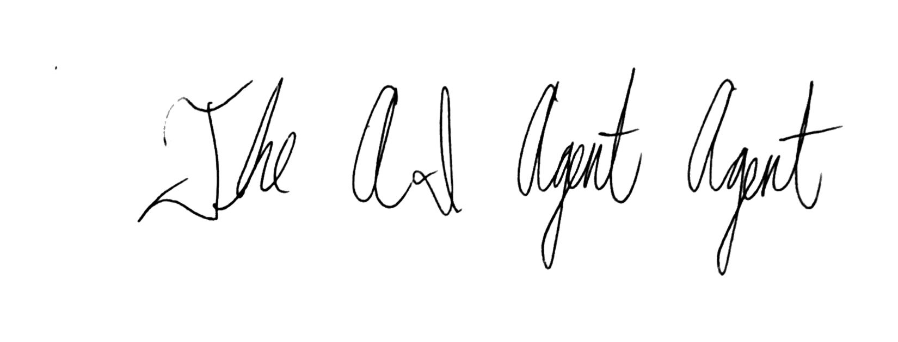
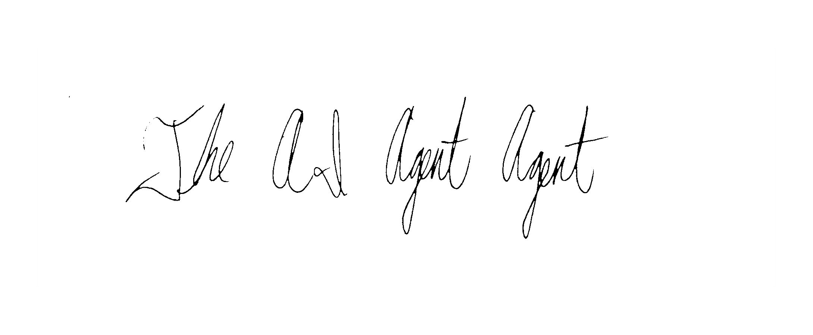
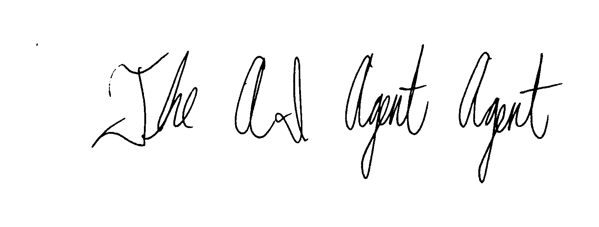
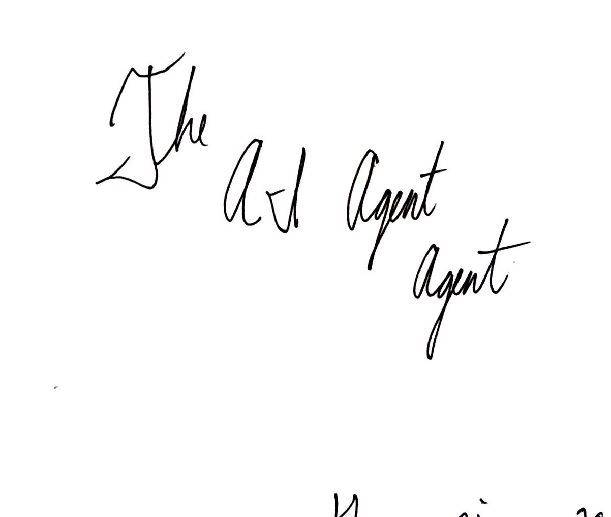
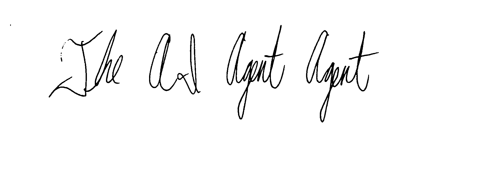
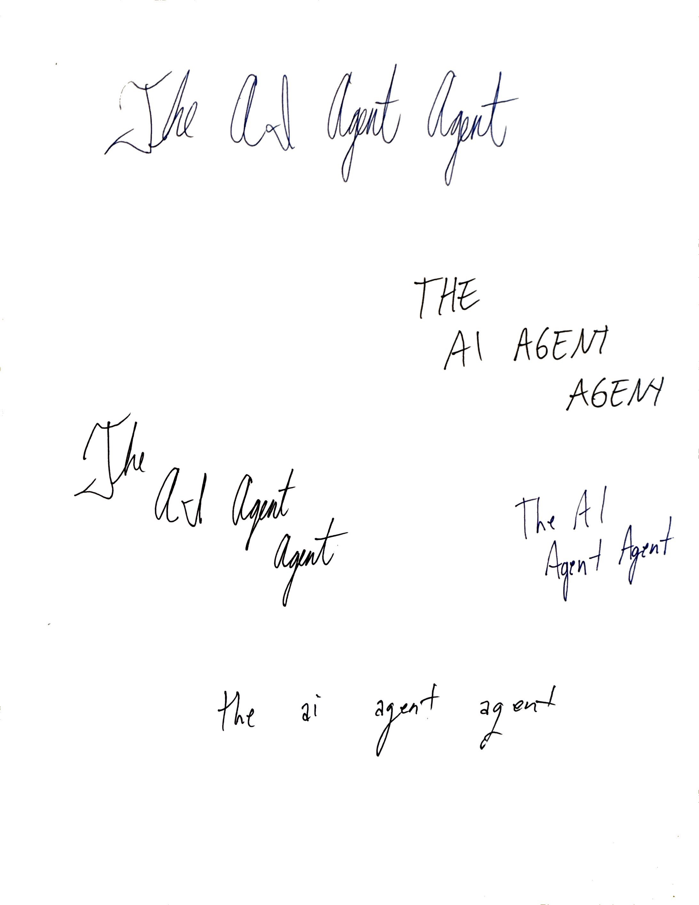

Pick one. Tell me the number.
All real ink from the page you wrote. No script fonts. No green AA blocks. No corporate templates.
Quick recs from what exists:
2 = clean black cursive (current hero)
1 = raw blue hero signature
4 = bold traced
6 = stacked natural shape
2 = clean black cursive (current hero)
1 = raw blue hero signature
4 = bold traced
6 = stacked natural shape
01 • Raw hero signature (blue ink)

brand/handwriting/crops/01-hero-signature-top.jpg
02 • Clean black (final mark)

site/assets/logo-hand.png (from vector/final-mark.png)
03 • Soft ink

site/assets/logo-soft.png (from vector/sig-soft.png)
04 • Bold traced

site/assets/logo-bold.png (from vector/bold-mark.png)
05 • Pro bold

site/assets/logo-pro.png
06 • Stack lockup (raw)

brand/handwriting/crops/02-stack-left.jpg
07 • Caps block (raw)

brand/handwriting/crops/03-caps-right.jpg
08 • BW hero

site/assets/logo-hero-bw.png
09 • On black (invert test)
brand/logo/vector/final-mark.png
10 • Full page sample

brand/handwriting/samples/01-the-ai-agent-agent.jpeg
Other files still in vector/
agency-mark.png, logo-clean.png, master-logo.png, raw-hero.png, sig-raw.png, sig-vector.png, wordmark-*.svg variants, stack-traced.svg, etc.
Tell me the number (or describe what you want — e.g. “bolder + green accent” or “just the raw blue on white”) and I’ll lock it in and update the site + all assets.